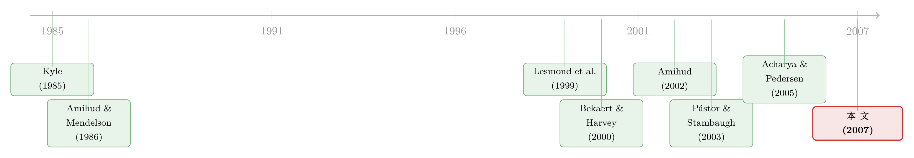

数不清的「零」：新兴市场用一串静止的价格，量出了流动性的价格
本文读的是 Bekaert, Harvey & Lundblad (2007, Review of Financial Studies)：在数据稀薄的新兴股票市场里，作者用「每月有多少天日收益恰好为零」这个朴素到近乎粗糙的指标度量(il)流动性，发现它能显著地正向预测未来收益、与同期收益冲击同向、与股利率冲击反向——而被广泛使用的换手率(turnover)却几乎什么都预测不了。更妙的是，开放(liberalization)之后流动性溢价确实下降了，却并没有被完全抹平。
1 一个尴尬的问题：你想量流动性，却连价差都没有
先抛一个尴尬的事实给你。
整个资产定价文献都「知道」流动性重要：流动性差、交易成本高的资产，相对于它的预期现金流会被定一个低价——也就是说，平均流动性是被定价的（Amihud and Mendelson, 1986；Brennan and Subrahmanyam, 1996）。更进一步，流动性还能预测未来收益，流动性冲击与收益冲击同向（Amihud, 2002；Jones, 2002）；如果流动性还会系统性地共同波动（Chordia et al., 2000），那么与市场流动性正相关的证券就该有更高的预期收益（Pástor and Stambaugh, 2003）。这套逻辑在美国数据上被反复验证，链条严丝合缝。
但这里有个问题——也是本文真正的起点：这些漂亮的检验，几乎全都建立在美国市场之上，而美国偏偏是全世界最不该有强流动性效应的地方。它证券数目巨大、所有权结构高度分散，长期投资者（不太怕流动性风险）和短期投资者混在一起，单是投资者结构里的「客户效应」(clientele effect)就足以稀释流动性的定价。换句话说，你在最不容易看见流动性溢价的地方，去检验流动性溢价。
那一个自然的问题是：去哪里才能看清楚它？
作者的回答是——新兴市场。这里证券少、所有权单一，流动性效应理应被放大；而且 Chuhan (1992) 早就在一份调查里指出，「流动性差」是外国机构投资者不愿进入新兴市场的主因之一。如果流动性溢价是真的，那么在这片土壤上，检验会格外有力。
这正是本文方法论上的高明之处：它把「美国数据上的流动性溢价是不是某个被遗漏变量在冒充」这个老质疑，放到一个结构会发生断裂的环境里去回答——很多新兴市场在样本期里经历了股权开放，而开放本该削弱流动性的定价。这等于给了作者一个天然的「双重检验」。
但马上撞上第二堵墙：新兴市场数据质量太差，买卖价差(bid–ask spread)、价格冲击这些「正经」的微观结构度量根本拿不到，或者只覆盖区区两年、几个月（Domowitz et al., 2001；Jain, 2002）。你想量流动性，手里却连最基本的尺子都没有。
2 关键的一步：把「没有交易」翻译成「一个零」
真正关键的一步，来自一个极简的洞察，源头是 Lesmond, Ogden and Trzcinka (1999)：
如果一条信息的价值，还不足以覆盖交易它所要付出的成本，那么市场参与者会选择不交易——结果就是当天观察到一个零收益。
于是，交易成本越高、流动性越差的市场，"零收益日"就越多。把这个想法做成指标，就是本文的主力度量：零收益比例 (proportion of zero daily returns, ZR)——对每个国家，按市值加权计算所有公司当月日收益为零的比例，再在月内取平均。它的全部数据需求，仅仅是一串日收益率。在新兴市场这种「除了日收益什么都缺」的地方，这是一个近乎完美的妥协。
数据说话。在 19 个新兴市场里，哥伦比亚有高达 52% 的日收益为零，而最低的台湾只有 6.6%，全样本平均 30.8%。这些「零」还相当持续（自相关普遍在 0.8 以上）。
接着，一个自然的追问是：这串「零」，真的在量流动性吗，还是在量别的什么东西？
作者花了整整一节去自证清白，逐条排除替代解释，这部分恰恰是论文最扎实的地方：
- 会不会只是"没新闻"？ 如果用 French et al. (1987) 式的月内波动率去比，零收益比例与波动率的平均相关系数只有
−0.02（PP 度量是−0.05），几乎为零；与条件波动率（TARCH）的相关也时正时负、经济意义上很小。"零"不是单纯的"没消息"。 - 会不会只是"小公司多"？ 用市值加权已经缓解了这点；而且覆盖公司数与零收益比例的横截面相关高达
−0.64——公司越多的市场零越少，方向恰恰对。 - 会不会和换手率讲的是同一件事？ 不是。零收益比例与换手率的横截面相关只有
−0.35，国家内时序相关平均仅−0.16。两者捕捉的是不同的东西。 - 它和"真"流动性对得上吗？ 对得上。在能拿到买卖价差的少数国家，零收益比例与平均价差的相关平均达到
48%；Lesmond (2005) 用手工收集的更广样本也确认了这一点。
（关于"成交太少时还能不能把价差量准"这个更技术化的同源问题，可参见《一天只成交几笔，价差还能量准吗？——把「离散」写进 bid-ask spread 的估计》。）
然后作者还嫌不够，又造了第二个度量，把"连续不交易的长度"也算进去。
3 公式：当一只股票"沉默"太久，价格会"补涨"
想象两只股票。一只隔天才交易，另一只前 15 天完全不动、之后天天交易。整月看，两者的零收益比例都是 0.5。但显然，后者那一笔"打破长期沉默"的成交，会承受大得多的价格冲击——这才是更糟的流动性。
为了把这个"补涨"(catch-up)效应抓住，作者构造了非交易价格压力 (price pressure of non-trading, PP)。先看它的核心方程：
这里的两块拼图是：
$$ \delta_{j,t} = \begin{cases} 1, & \text{if } r_{j,t} \text{ or } r_{j,t-1} = 0 \\ 0, & \text{otherwise} \end{cases} $$
它标记出"无交易日"以及"长期停摆后第一个恢复交易、价格压力得以释放的那一天"。而那个被"补"出来的收益，定义为：
$$ r_{j,t,\tau} = \begin{cases} r_{j,t}, & \text{if } r_{j,t-1} \neq 0 \\ \prod_{k=0}^{\tau-1}(1+r_{i,t-k}) - 1, & \text{if } r_{j,t-1} = 0 \end{cases} $$
直觉是这样的：当一只股票连续 \(\tau\) 天不动，我们看不到它"本应"如何波动，于是用市场组合的累积收益 \(r_{i,t}\) 去近似它——停摆越久，\(\tau\) 越大，这个补出来的收益绝对值越大，\(PP_{i,t}\) 就越被拉向 1.0。如果整月没有任何股票交易，\(PP\) 直接定义为 1。
两个度量讲的是同一个故事：横截面上，PP 与 ZR 的相关高达 94%（委内瑞拉的时序相关甚至到 95%），时序平均相关 54%。最后，作者对两者各取 \(\ln(1-ZR)\)、\(\ln(1-PP)\) 作为正式进入模型的流动性代理。
4 它真的预测收益吗？——VAR 里的三个事实
有了干净的尺子，接着就是把 Amihud (2002) 在美国数据上提出的几个假说，搬到新兴市场来检验。逻辑很清楚：如果流动性风险被定价、且流动性是持续的，那么流动性应当预测未来收益，且未预期的流动性冲击应当与未预期收益同期共动。
作者用向量自回归 (vector autoregression, VAR) 来刻画收益与流动性的联合动态，并施加跨国参数约束（因为单国时序太短，新兴市场收益又极度波动，纯粹的逐国时序检验没什么力量）。三个核心发现：
- 流动性（零收益比例）显著地正向预测未来收益——越不流动，要求的预期收益越高；
- 未预期的流动性冲击，与同期的收益冲击正相关；
- 流动性冲击与股利率(dividend yield)冲击负相关。
这三条恰好就是"流动性是被定价的风险因子"所预言的全套印记。而作为对照，换手率——那个被无数人当作流动性代理的指标——几乎预测不了任何东西。这是本文最有冲击力的对比之一：不是随便抓个交易活跃度指标都行，"零收益"抓住了换手率抓不住的那一层。
5 反转：开放削弱了它，却没有抹平它
到这里，故事本可以收尾。但真正的反转在最后一节的资产定价模型里。
作者写下一个简单的定价模型：风险因子是流动性和市场组合，同时交易成本与流动性成比例，并把 Acharya and Pedersen (2005) 的"流动性调整 CAPM"作为一个特例嵌进去。这个模型的关键巧思在于，它区分了"已整合"(integrated)与"分割"(segmented)的国家与时期。结论令人意外：
即便在完全的国际市场整合之下，本地流动性变量仍然可能影响预期收益。
为什么？因为开放固然让外国投资者得以进入、本地投资者得以出海，从而压低了系统性风险的价格；但只要交易成本仍随本地流动性变动，本地流动性就仍会通过"成本"这条腿渗进预期收益里。于是实证上我们看到：开放之后，流动性对预期收益的重要性确实下降了——这与"流动性被定价"完全一致；但它并没有被完全消除。本地市场流动性，始终是新兴市场预期收益的一个重要驱动。
这也顺带给 Bekaert and Harvey (2000) 记录的"开放后资本成本下降"补上了一块拼图：改善的流动性，正是成本下降的渠道之一。
这里有一处必须诚实的局限：作者度量的是"零收益"，而不是真正的"非交易"。一笔无信息含量的交易（比如指数基金的调仓）在流动市场里本不该引起价格变动，却会破坏一个"零"。所以零收益既可能来自不交易，也可能来自"有成交但价格没动"。作者的辩护是：即便如此，零仍然是"缺乏知情交易"的度量，且它与换手率的负相关本身就是间接证据，说明噪声交易并未主导这个指标。
6 文献脉络
把这条线索摊开看，它的演进相当清晰。
最上游是市场微观结构的理论传统：Kyle (1985) 的连续拍卖与内幕交易、Glosten and Milgrom (1985)、Easley and O'Hara (1987)、Admati and Pfleiderer (1988)——它们告诉我们交易成本与信息不对称如何内生。顺流而下，Amihud and Mendelson (1986) 把买卖价差与资产定价正式接起来，奠定"流动性被定价"的范式。
接着是两条支流的汇合：一条是把流动性做成可预测变量与风险因子——Amihud (2002) 的非流动性比率、Pástor and Stambaugh (2003) 的流动性风险因子、直到 Acharya and Pedersen (2005) 把它整合成"三个 beta"的流动性调整 CAPM；另一条是怎么度量流动性——Lesmond, Ogden and Trzcinka (1999) 的零收益思想，以及 Lesmond (2005) 对新兴市场交易成本的专门考察。
而新兴市场这条线，则承自 Bekaert (1995)、Harvey (1995) 对新兴市场可预测收益的早期研究，以及 Bekaert and Harvey (2000) 对开放与资本成本的经典记录。本文（Bekaert, Harvey and Lundblad, 2007）恰好站在这两条线的交叉点上：用"度量流动性"的工具，去检验"流动性被定价"的理论，并借"开放"这个结构断裂提供独立证据。

7 评论与延伸（Q&A + 研究方向）
(a) 几个可能的疑问
Q：零收益比例和换手率，不都是"交易活跃度"吗？为什么结论差这么多？
不一样。换手率衡量的是"量"（成交额/市值），但量大不等于成本低——某些新兴市场换手率畸高（如巴基斯坦月均
27.8%），却未必更流动。零收益比例衡量的是"价格能不能动起来"，更贴近交易成本的本质。实证上两者横截面相关只有−0.35，且只有零收益能预测收益，说明它捕捉到了换手率漏掉的那层。
Q：用"零收益"代替"非交易"，会不会有系统性偏差？
会，作者也承认这是潜在的严重局限。流动市场里的无信息交易会"消灭"一个本该有的零，导致低估；而跨境上市的股票若在海外成交、本地不动，又会高估本地的零（作者剔除 ADR 后重算，相关性仍超过
0.95，缓解了这一担忧）。但只要解读为"缺乏知情交易"，零收益依然是有意义的。
Q：开放之后流动性溢价没被完全抹平，会不会只是开放不彻底？
这正是模型要回答的。作者证明，即便在完全整合下，本地流动性也能通过"交易成本"渠道影响预期收益——所以"没被抹平"不必然意味着"开放不彻底"，它可能是流动性定价的结构性特征。当然，实证上两者难以完全分开，这是识别上的软肋。
Q：为什么要用跨国参数约束的 VAR，而不是逐国估计？
因为新兴市场单国时序太短、收益波动极大，逐国时序检验几乎没有统计功效。施加跨国约束是用横截面信息换时序信息，代价是假设了参数的某种同质性——这是个实用但不无争议的取舍。
Q：这套结论能不能搬到公司债等其他非流动市场？
思想可以，度量要小心。公司债同样数据稀疏、交易稀少，"零收益/零成交"的逻辑天然适用；但债券的零更多来自"根本没报价"而非"信息不足以触发交易"，机制不完全一样。（关于危机里公司债流动性如何崩塌，可参见《差点死掉的那个市场：一场公司债流动性危机的微观解剖》。）
Q：开放、外资进入与流动性，三者的因果方向是什么？
本文的叙事是"开放 → 外资进入与风险分担改善 → 流动性改善 → 资本成本下降"。但外资偏好本就流动的市场，反向因果难以排除。（关于外资进入对东道国市场的长期影响，可参见《外资真是「蝗虫」吗？——一次跨 30 国的长期投资体检》。）
(b) 几个可能的研究问题与提案
1. 把"零收益"度量移植到美国公司债的横截面
【经济故事】公司债成交极度稀疏，零成交/零价格变动天然普遍，零收益思想几乎是为它量身定做。能否用它构造一个不依赖 TRACE 成交量的流动性度量，去解释信用利差中的流动性那一块？ 【可行性】高。TRACE 提供日度成交，Datastream/Mergent 提供报价，零收益与已有流动性度量（Amihud、Roll、报价价差）可直接对照。识别上可借鉴本文的 VAR 框架。
2. 外资持有人结构与本地流动性的因果链
【经济故事】本文把开放当作"外资可进入"的总开关，但不同国家外资的"质地"（长期养老金 vs. 短期热钱）不同，对本地流动性的影响应当迥异。把外资持有人按期限拆开，能否分离出"流动性提供者"与"流动性消耗者"？ 【可行性】中。需要 FactSet/EPFR 的跨国持仓数据与本文的零收益度量。识别可用指数纳入（如 MSCI 可投资度调整）作为外生冲击。
3. 流动性溢价的"非对称消失"：开放容易、退潮难？
【经济故事】开放削弱了流动性溢价，那么在资本管制重新收紧（如近年若干新兴市场）时，流动性溢价是否对称地回升？还是存在棘轮效应？ 【可行性】中。需要把样本延长到 2008 年后并标注管制收紧事件（Edison and Warnock, 2003 式的管制强度指标可用）。难点在于把流动性变化从危机本身的影响中剥离。
4. 用"零收益"重估新兴市场的因子动物园
【经济故事】很多在美国成立的因子（价值、动量）在新兴市场表现不稳，会不会有相当一部分是流动性度量误差造成的"幻觉"？把零收益作为流动性控制变量加入，因子溢价还剩多少？ 【可行性】高。S&P/IFC 与 Datastream 数据现成，方法直接。可与《显著性异象的「微缩」真相》那类"异象只活在小角落"的发现对话。
我的判断
这篇文章的贡献，与其说在"又一次证明流动性被定价"，不如说在它选对了实验场，又造对了尺子。在数据最匮乏的地方，用一个只需要日收益的指标，把一套原本只在美国跑得通的检验完整复刻出来，并借开放这个结构断裂提供了美国数据给不了的独立证据——"流动性溢价随开放下降但未消失"这一条，比任何一个 t 值都更有说服力，因为它是理论的方向性预言被数据接住了。
对识别，我有两点保留。其一，"零收益≠非交易"这个测量裂缝始终在，作者的辩护是合理的，但它把"流动性"和"知情交易缺失"混在了一起，二者的定价含义未必相同。其二，跨国参数约束是用同质性假设换统计功效，VAR 的结论对这个假设有多敏感，文中着墨不多。
后续我最想看到的，是把这套"零收益"框架搬到公司债与信用市场——那里数据更稀、交易更少，正是这把尺子最该发光的地方；以及把"外资持有人结构"显式拆开，看清到底是谁在为新兴市场提供（或消耗）流动性。
参考文献
Acharya, V. V., and L. H. Pedersen (2005). Asset Pricing with Liquidity Risk. Journal of Financial Economics 77, 375–410.
Admati, A., and P. C. Pfleiderer (1988). A Theory of Intraday Patterns: Volume and Price Variability. Review of Financial Studies 1, 3–40.
Amihud, Y. (2002). Illiquidity and Stock Returns: Cross Section and Time Series Effects. Journal of Financial Markets 5, 31–56.
Amihud, Y., and H. Mendelson (1986). Asset Pricing and the Bid-Ask Spread. Journal of Financial Economics 17, 223–249.
Bekaert, G. (1995). Market Integration and Investment Barriers in Emerging Equity Markets. World Bank Economic Review 9, 75–107.
Bekaert, G., and C. R. Harvey (2000). Foreign Speculators and Emerging Equity Markets. Journal of Finance 55, 565–614.
Bekaert, G., C. R. Harvey, and C. Lundblad (2007). Liquidity and Expected Returns: Lessons from Emerging Markets. Review of Financial Studies 20(6), 1783–1831.
Brennan, M. J., and A. Subrahmanyam (1996). Market Microstructure and Asset Pricing: On the Compensation for Illiquidity in Stock Returns. Journal of Financial Economics 41, 441–464.
Chordia, T., R. Roll, and A. Subrahmanyam (2000). Commonality in Liquidity. Journal of Financial Economics 56, 3–28.
Chuhan, P. (1992). Are Institutional Investors an Important Source of Portfolio Investment in Emerging Markets? World Bank Working Paper No. 1243.
Datar, V. T., N. N. Naik, and R. Radcliffe (1998). Liquidity and Asset Returns: An Alternative Test. Journal of Financial Markets 1, 203–219.
Domowitz, I., J. Glen, and A. Madhavan (2001). Liquidity, Volatility, and Equity Trading Costs Across Countries and Over Time. International Finance 4, 221–255.
Easley, D., and M. O'Hara (1987). Price, Trade Size, and Information in Securities Markets. Journal of Financial Economics 19, 69–90.
French, K., G. W. Schwert, and R. F. Stambaugh (1987). Expected Stock Returns and Volatility. Journal of Financial Economics 19, 3–30.
Glosten, L., and P. Milgrom (1985). Bid, Ask and Transaction Prices in a Specialist Market with Heterogeneously Informed Traders. Journal of Financial Economics 14, 71–100.
Jones, C. (2002). A Century of Stock Market Liquidity and Trading Costs. Working paper, Columbia University.
Kyle, A. P. (1985). Continuous Auctions and Insider Trading. Econometrica 53, 1315–1335.
Lesmond, D. A. (2005). The Costs of Equity Trading in Emerging Markets. Journal of Financial Economics 77, 411–452.
Lesmond, D. A., J. P. Ogden, and C. Trzcinka (1999). A New Estimate of Transaction Costs. Review of Financial Studies 12, 1113–1141.
Pástor, L., and R. F. Stambaugh (2003). Liquidity Risk and Expected Stock Returns. Journal of Political Economy 111, 642–685.